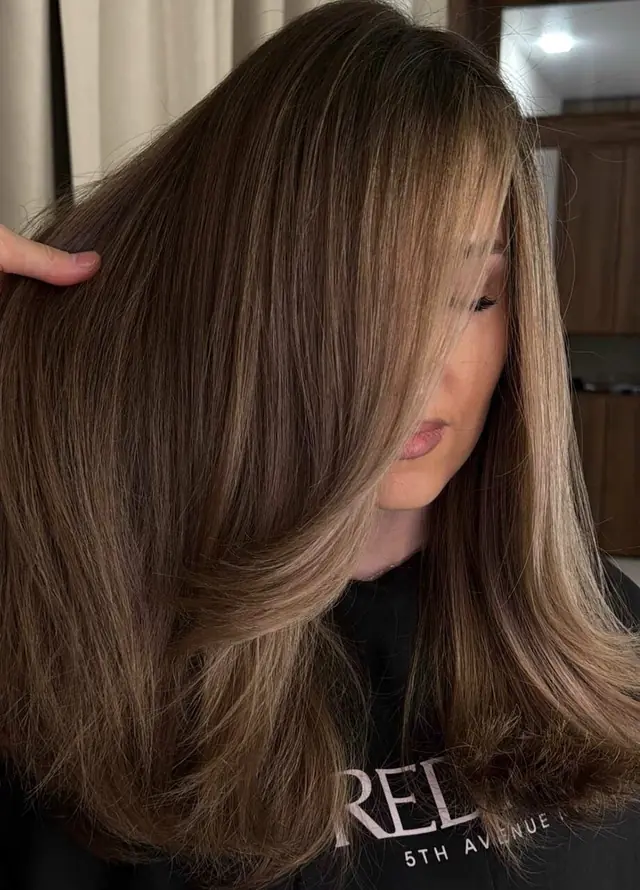
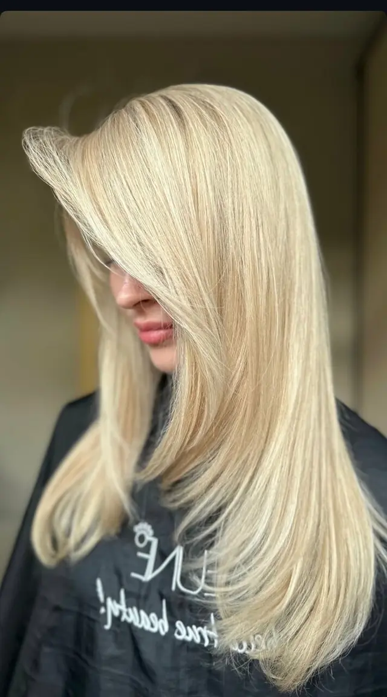
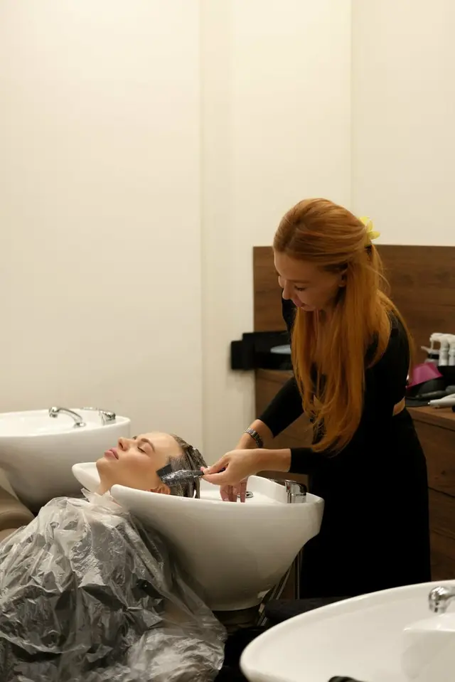
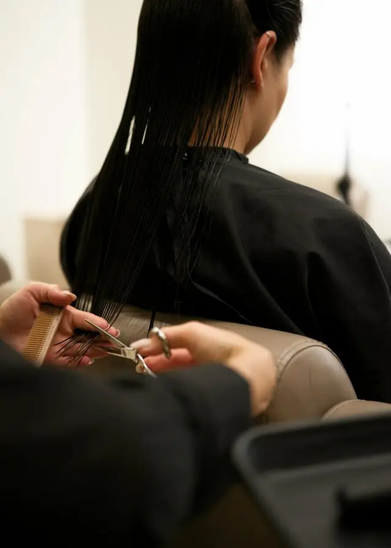
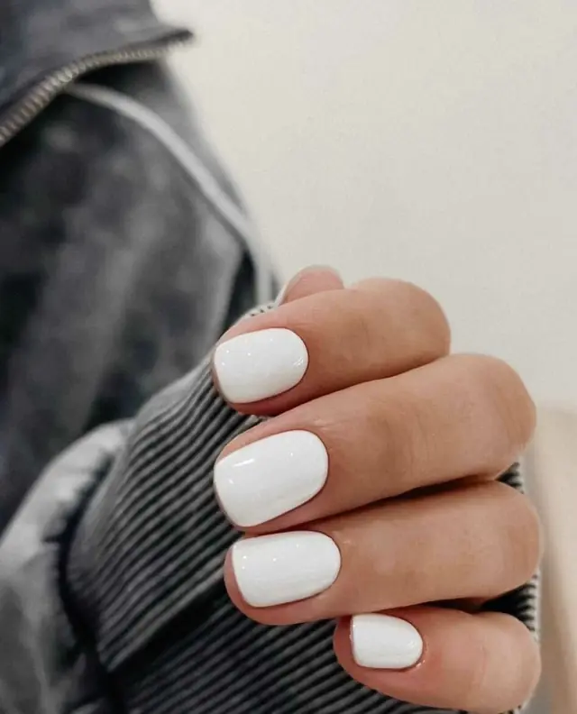
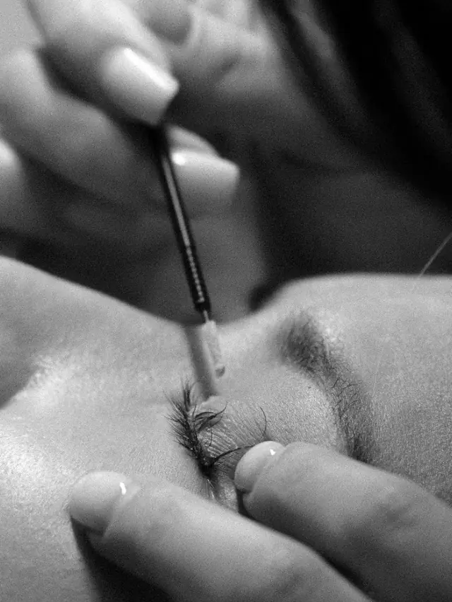
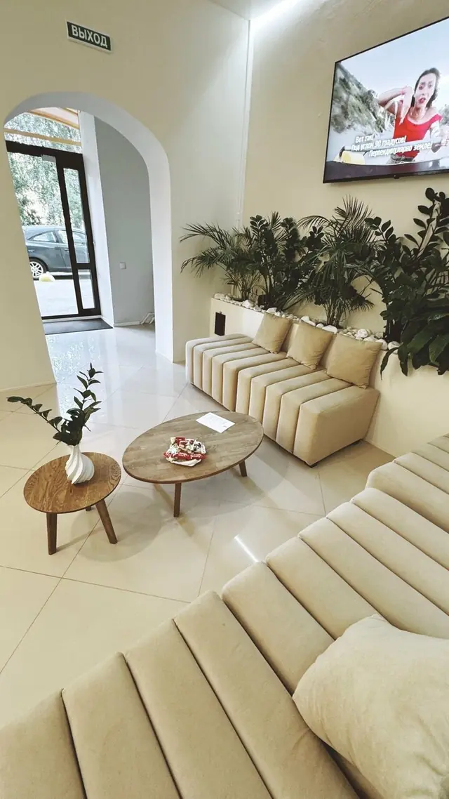
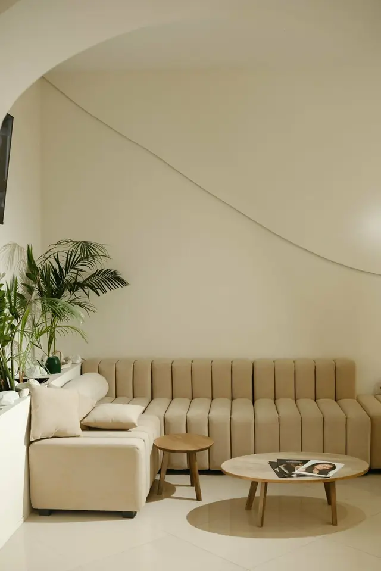
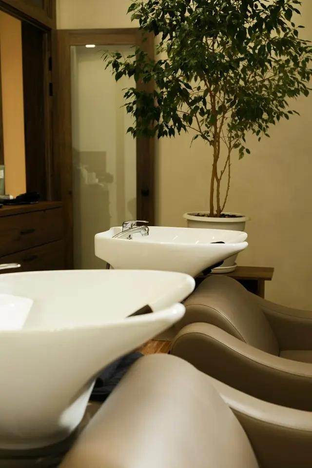
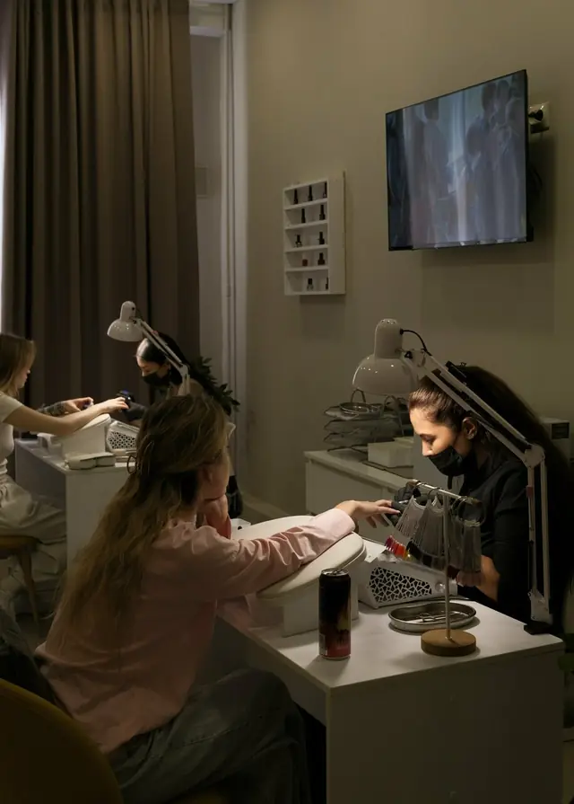

Окрашивание
- Сложное окрашивание, длинные волосыот 20 000 ₽
- Сложное окрашивание, короткие волосыот 12 000 ₽
- Сложное окрашивание у арт-директора, длинные волосыот 25 000 ₽
Окрашивание и тонирование волос на улице Курашова, 1,46 км от м. Площадь Тукая.

О студии
Mais women space – пространство красоты в Казани. Основное направление студии – работа с цветом волос.
Направления
Цены
Главное – окрашивание и тонирование волос. А ещё стрижки и уход для волос, маникюр и педикюр, брови и ресницы, массаж.
Галерея








Курашова, 20






Цитаты
Много лет с мастером Майса, профессионал своего дела. 100% доверие проверенное временем. Атмосфера пространства -это отдельная любовь, идеальное место, где можно забыть о времени и просто наслаждаться процессом.
Добрый день, очень приветливый персонал, приятная атмосфера. Записали к мастеру Валерии. Меня выслушали, обсудили все нюансы, подсказали, как лучше. Стрижкой довольной - мастер отличный, видно профессионал своего дела) муж тоже оценил стрижку на 10 из 10)
Мухаббат прекрасный мастер по наращиванию ресниц и ламинирование бровей , у неё индивидуальный подход к гостям , делает все очень аккуратно и быстро ❤️ всегда поддерживает приятную и ненавязчивую беседу .
Работаю в этом районе и за услугами хожу в это прекрасное место, можно сделать реснички, маникюр, педикюр, визаж, оформить брови и покрасить и сделать уход за волосами, прекрасные мастера Карина, Майса, Мухаббат, я всегда довольна качеством услуг. Сервис на высоком уровне, всегда приветливо встречают, предлагают чай, кофе, и атмосфера очень эстетичная, теплая, много света и пространства, можно расслабиться и наслаждаться абсолютно всем Однозначно рекомендую!
Контакты
Студия в Казани, на улице Курашова. От м. Площадь Тукая – 1,46 км пешком.
Казань, ул. Курашова, 20
Построить маршрут